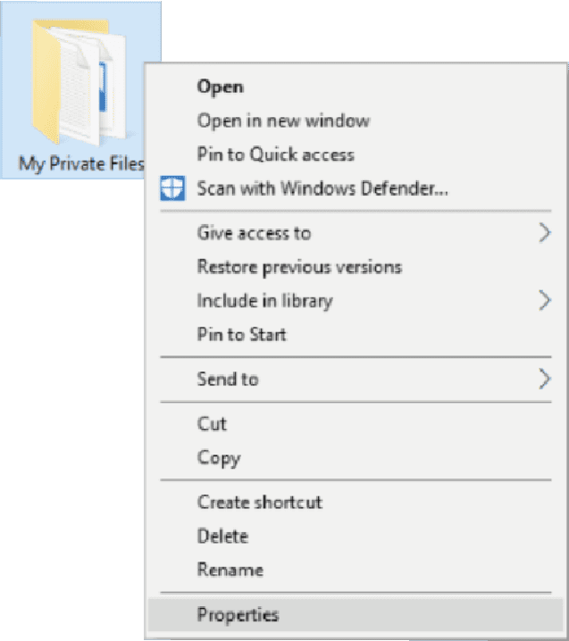

Explain the basics of being safe online, including what cybersecurity is and its potential impact.
Explain the most common cyber threats, attacks and vulnerabilities.
Explain how organizations can protect their operations against these attacks.
Access various information and resources to explore the different career options in cybersecurity.
Module 3 - Protecting your Data and Privacy
Welcome to this module, which looks at how to protect yourself online and maintain your privacy.
Remember, your online data is valuable to cybercriminals. So what can you do to stay safe?
There are some simple strategies that you can use to protect your personal devices and maintain your
data securely. Let’s take a look at what these are.
Chapter 3.2 - Data Maintenance
Are you ready to share all of your photos with strangers?
Your financial information with your friends?
Your email passwords with the general public?
No?
Then your data must be encrypted.
3.2.1 What Is Encryption?
Encryption is the process of converting information into a form in which unauthorized parties cannot
read it. Only a trusted, authorized person with the secret key or password can decrypt the data and
access it in its original form.
Note that the encryption itself does not prevent someone from intercepting the data. It can only
prevent an unauthorized person from viewing or accessing the content. In fact, some criminals may
decide to simply encrypt your data and make it unusable until you pay a ransom.
3.2.2 How Do You Encrypt Your Data?
Software programs are used to encrypt files, folders and even entire drives.
Encrypting File System (EFS) is a Windows feature that can encrypt data. It is directly linked to a
specific user account and only the user that encrypts the data will be able to access it after it
has been encrypted using EFS.
Discover how to encrypt data using EFS in all Windows versions (except Windows 10 Home).
Step 1
Select one or more files or folders.
Step 2

Right click the selected data and go to ‘Properties’.
Step 3
Find and click ‘Advanced’.
Step 4
Select the ‘Encrypt contents to secure data’ check box.
Step 5
Files and folders that have been encrypted with EFS are displayed in green as shown here.
Consider the amount of valuable data you have stored on your mobile phone or laptop. You probably have
important documents, contact information and family photos!
So imagine if your mobile phone was stolen or you lost your laptop. All that information would be
lost... unless you have it backed up!
3.2.3 Back Up Your Data
Having a backup may prevent the loss of irreplaceable data. To back up data properly, you will need
an additional storage location for the data and you must copy the data to that location regularly.
Home network
Storing your data locally means that you have total control of it.
Secondary location
You could copy all of your data to a network attached storage device (NAS), a simple external
hard drive or maybe even back up important folders on thumb drives, CDs, DVDs or tapes. In this
scenario, you are the owner of the data and you are totally responsible for the cost and
maintenance of the storage device equipment.
The cloud
You could subscribe to a cloud storage service, like Amazon Web Services (AWS). The cost of this
service will depend on the amount of storage space you need, so you may need to be more
selective about what data you back up. You will have access to your backup data as long as you
have access to your
One of the benefits of using a cloud storage service is that your data is safe in the event of a
storage device failure or if you experience an extreme situation such as a fire or theft.
3.2.4 Are They Really Gone?
You’ve logged into your laptop but it contains some photos belonging to the previous user, who no
longer works at @Apollo. Your line manager asks you to delete them. You drag the photos into the
recycle bin, open the recycle bin, select them and click ‘Delete’ once again. That should do it!
Do you think the photos are really gone from the laptop?
When you move a file to the recycle bin and delete it permanently, the file is only inaccessible
from the operating system. Anyone with the right forensic tools could still recover the file due to
a magnetic trace left on the hard drive.
So how do you ensure that erased data is no longer recoverable? Let’s see…
3.2.5 How Do You Delete Your Data Permanently?
Have you ever had to delete data or get rid of a hard drive? If so, did you take any precautions to
safeguard the data to keep it from falling into the wrong hands?
Find out what you should do to ensure you delete your files securely and permanently.
The cloud
To erase data so that it is no longer recoverable, it must be overwritten with ones and zeroes
multiple times, using tools specifically designed to do just that. SDelete from Microsoft claims
to have the ability to remove sensitive files completely. Shred for Linux and Secure Empty Trash
for Mac OS X claim to provide a similar service.
The cloud
The only way to be certain that data or files are not recoverable is to physically destroy the
hard drive or storage device. Many criminals have taken advantage of files thought to be
impenetrable or irrecoverable!
Don’t forget about data that may be stored online in the cloud. These copies will also need to be
deleted.
Take a moment to consider where you save your data. Is it backed up and encrypted? Why not put some of
the information from this topic into practice and keep your valuable information safe and secure?
You should also be aware of how your personal data will be treated when you enter into a service
agreement with an online service provider.